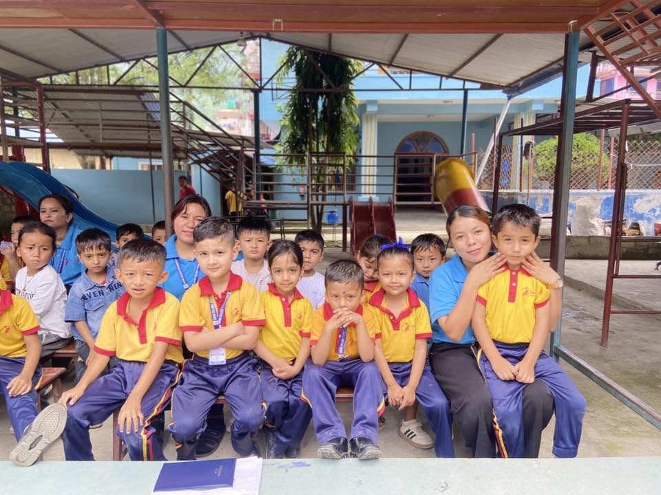

Primary School Curriculum
The primary curriculum develops foundational literacy and numeracy through structured yet engaging pedagogy. Students are assessed continuously through class activities, projects, and term exams.
Nepali LanguageEnglish LanguageMathematicsEnvironmental ScienceSocial StudiesMoral EducationHealth & Physical EducationComputer FundamentalsArt & Craft
